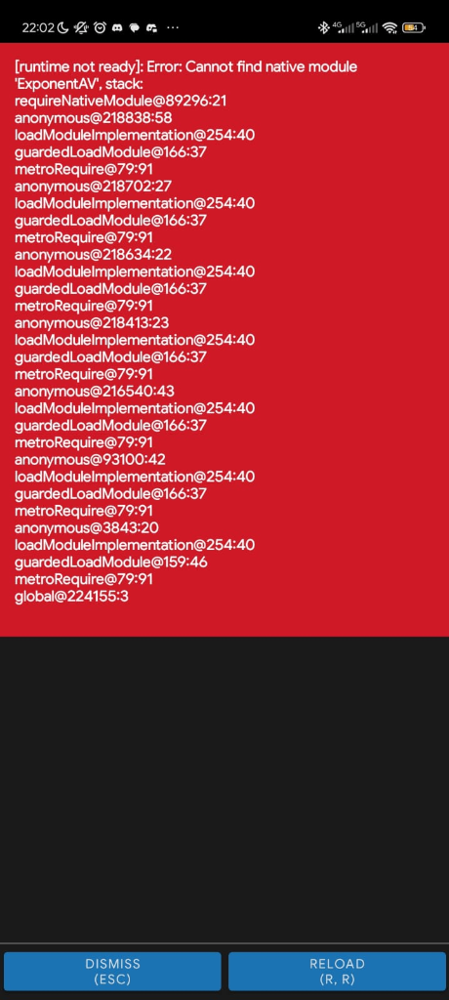

O gravador de áudio contínuo em buffer circular FIFO. Deixe gravando em segundo plano sem medo: o app retém apenas as últimas horas configuradas, recicla os blocos antigos automaticamente e salva qualquer trecho de reunião ou aula no Cofre Permanente com 1 toque.
Projetado no tema escuro OLED para economizar bateria e garantir foco absoluto. Alterne entre as telas abaixo para explorar a experiência real.

O radar circular central indica em tempo real a integridade da gravação, tempo acumulado na janela e espaço consumido no aparelho.
Apps comuns gravam um arquivo único e infinito. Se a bateria acaba, o arquivo corrompe. Se você esquece ligado, lota seu armazenamento. O EchoLoop reinventou o fluxo.
Construído com tecnologia nativa de ponta a ponta para entregar estabilidade industrial.
Configure a retenção ideal (2h a 12h). Os chunks mais antigos são excluídos suavemente na medida em que novos blocos entram no anel.
Motor nativo Kotlin em MediaCodec que alterna os arquivos em tempo real sem perder um único milissegundo de áudio entre as transições.
Alarmes exatos com AlarmManager nativo. O agendador inicia e encerra gravações no segundo exato com o celular bloqueado.
Acelere reuniões longas em 1.25x, 1.5x ou 2.0x, salte 10s para frente/trás com 1 toque e navegue com precisão pela barra de progresso.
Conecte sua própria chave de API (Groq Whisper-v3 a 200x tempo real, Deepgram, OpenAI) e obtenha transcrições perfeitas em Português e Inglês.
Seus áudios nunca saem do seu aparelho sem sua autorização explícita. Sem cadastro obrigatório, sem servidores centrais escutando sua vida.
Entenda como o fluxo de dados trafega de ponta a ponta sem degradação de performance.
Gravação PCM direta e codificação a quente em AAC ADTS sem passar pela thread JS.
Fechamento do bloco atual e abertura do próximo de forma atômica e journalizada.
Recorte de período selecionado e união binária ultrarrápida em arquivo definitivo.
Processamento inteligente via Groq Whisper, Deepgram ou OpenAI com BYOK.
O plano gratuito é 100% funcional para uso diário. Recursos profissionais desbloqueiam retenções gigantes e automação ilimitada.
Em vez de salvar um arquivo contínuo infinito, o EchoLoop grava pequenos chunks AAC de 5 minutos. Ele mantém exatamente a janela de tempo que você definiu (ex: 2 horas, ou seja, 24 chunks). Ao completar o 25º chunk, o 1º é automaticamente apagado. O espaço nunca cresce além do limite fixado (~80 MB para 2h).
Graças ao sistema de Journaling ADTS nativo, cada bloco de áudio é salvo em frames autocontidos (.aac.part). Ao ligar o celular novamente, o mecanismo de Orphan Recovery reconstrói o arquivo até o último segundo gravado. Zero corrupção de arquivos.
Sim! O EchoLoop utiliza um Android Foreground Service registrado no manifesto com WakeLock e canal contínuo de microfone. Além disso, as tarefas de agendamento utilizam o subsistema nativo AlarmManager.setExactAndAllowWhileIdle, garantindo que o alarme toque no horário correto mesmo no sono mais profundo do sistema operacional.
O EchoLoop adota a filosofia BYOK (Bring Your Own Key). Você pode colar sua chave de API gratuita do Groq Cloud (com Whisper-large-v3 rodando a 200x tempo real) ou Deepgram/OpenAI. As requisições saem diretamente do seu telefone para a API do provedor escolhido. O criador do app não tem acesso nem taxa sobre suas transcrições.
Instale agora no seu aparelho Android em menos de 1 minuto. Sem contas obrigatórias, sem anúncios invasivos e 100% focado em produtividade.